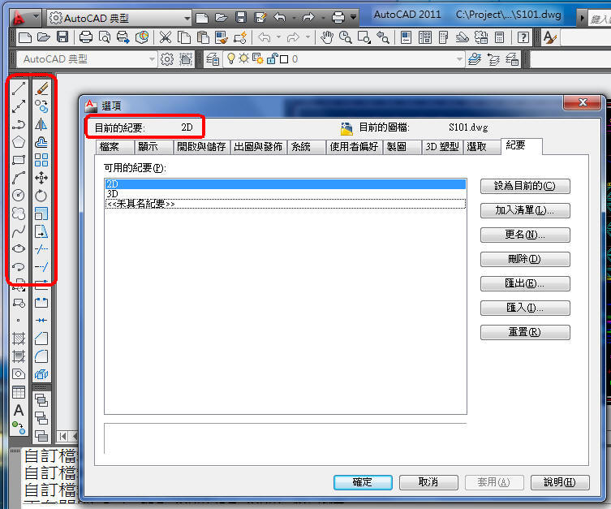
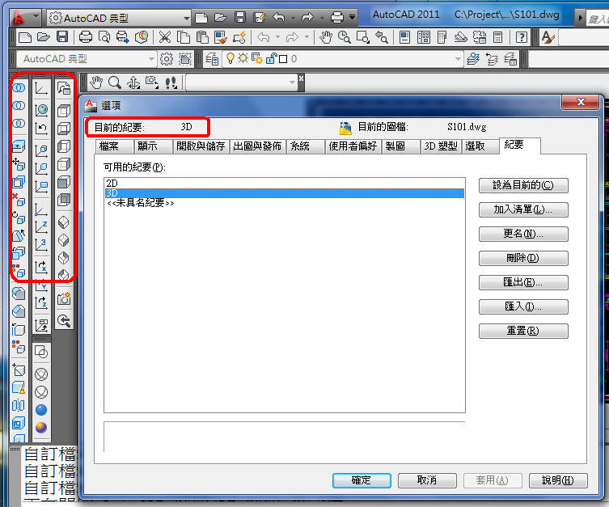
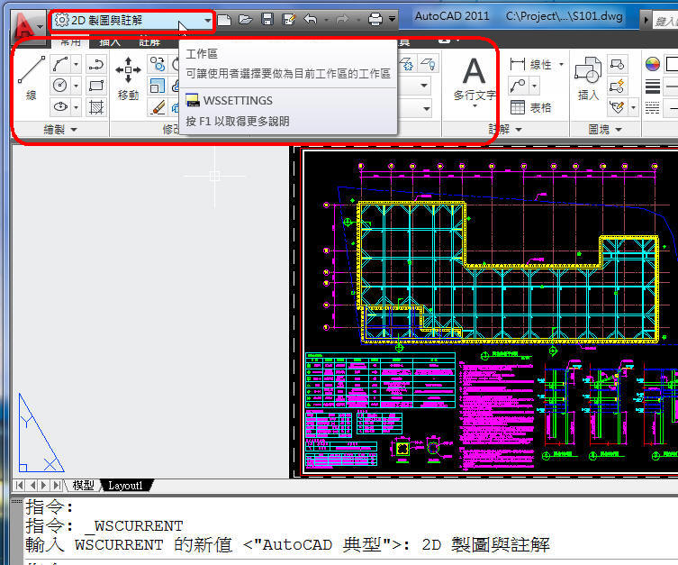
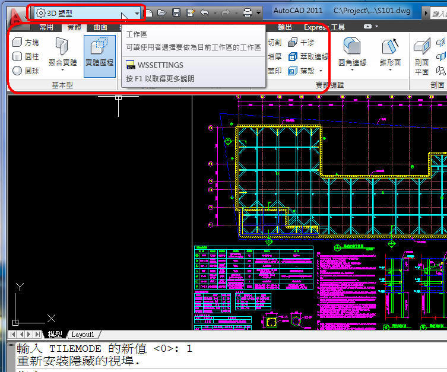
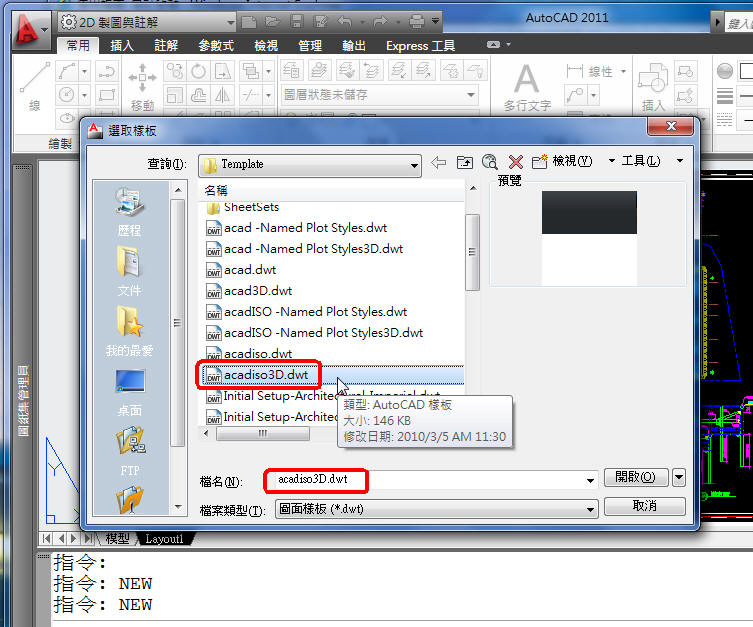
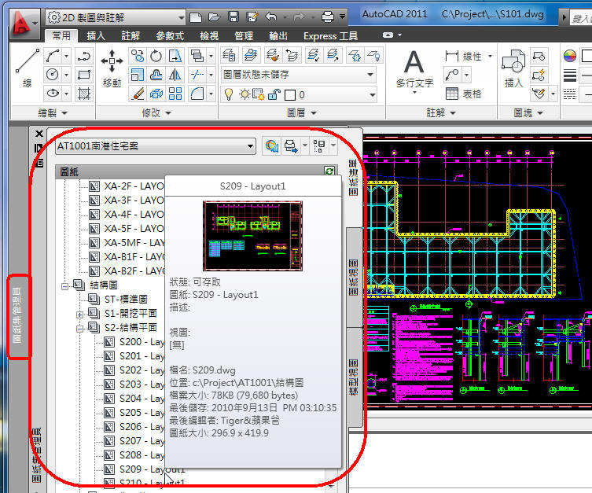

大家在了解上一篇 建立專案捷徑 簡單的方式後~
這一篇我們來討論如何自訂啟動，但是甚麼是自訂啟動呢!?
假設我已經能在啟動AutoCAD同時，就先行定義我要用的資料夾位置!
想想看能否再順便啟動 指定個案設定、指定工作區、樣板檔或開啟圖紙集 等工作~
也就是說再啟動您的AutoCAD程式後，接下來的工作步驟也移並幫你做好~
相信一整天的工作心情會一整個好起來才是!!
廢話不多說，這裡介紹四個典型的用法，咱們直接來操作吧!!
說明(所有版本都適用):
/p 指定紀要(個案設定) + 紀要(個案設定)名稱
/w 指定工作區 + 工作區名稱
/t 指定樣板檔 + 樣板檔名稱
/set 開啟圖紙集 + 圖紙集名稱
官網說明摘要：
http://docs.autodesk.com/ACD/2011/CHT/filesAUG/WS1a9193826455f5ffa23ce210c4a30acaf-79ba.htm
一、使用工具列，可以使用 紀要(個案設定arg) 方式:


說明:直接開啟你工作階段所需要的工具列，然後再加入清單即可!!
建議可以分為 2D及3D 二個紀要(個案設定arg)。
啟動語法:
/p 2D
/p 3D
補充:個案設定的好處，可以記住2D或3D工具列的顯示外，還可以記住大部分的系統變數(如十字游標大小)，還有就是上一篇提到的「Open／Select File」的左側新增捷徑 可以有不同的設定。
二、使用功能區，可以使用 工作區 方式:


說明:可以使用預設的功能區，也可以自行新建工作區，若是名稱有空格要在前後加上 "" 符號。
啟動語法:
/w "2D 製圖與註解"
/w "3D 塑型"
三、使用自訂的樣板檔:

說明:一開始就幫我開啟預設3D樣板
啟動語法:
/t acad3D.dwt
四、開啟圖紙集:

說明:記得須加入檔案路徑位置
/set C:\Project\AT1001\結構圖\AT1001南港住宅案.dst